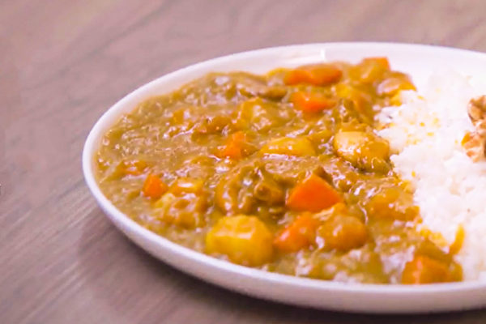

咖哩中有一種成分「薑黃」。薑黃不僅調出咖哩誘人的橙黃色，它所含有的薑黃素（Curcumin），提升了咖哩料理的特殊營養價值！
薑黃素是多酚類的一種，具有抗氧化作用。《美國化學會志》（JACS）發表研究指出， 薑黃素的抗氧化能力是維生素E的1.6倍、維生素C的2.75倍，因此是抗氧化對抗自由基的好食材之一。 除了抗氧化等健康益處之外，近期研究也發現，多羥基薑黃素衍生物與預防阿茲海默症相關。

為何義大利麵很貴? 吸麵大聲好失禮? 提拉米蘇由來 心得報告